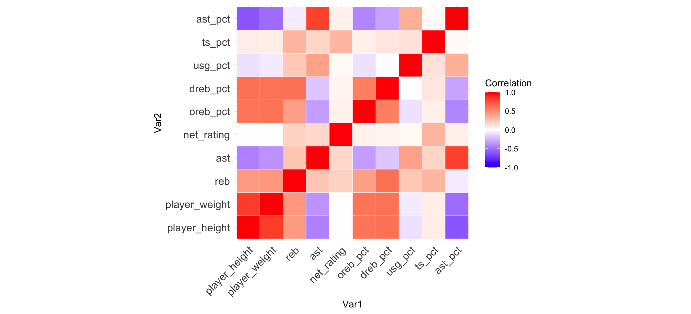
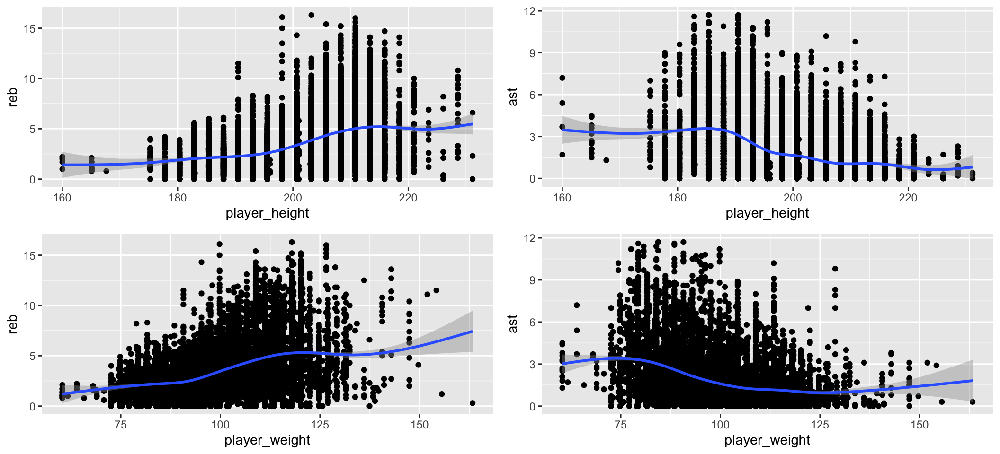
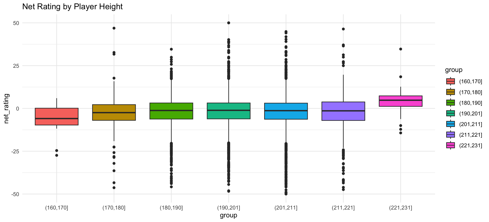
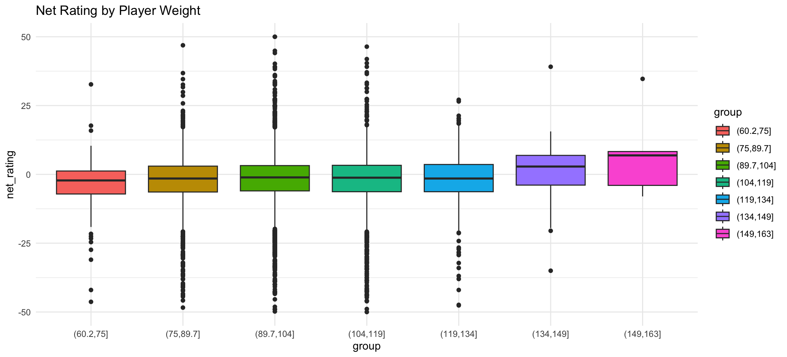

3 Correlation Analysis
3.1 Correlation Between H/W and Others
- The correlation matrix visually represents the relationship between height/weight and other basketball metrics.
- Correlations range between -1.0 and 1.0, with darker red indicating a strong positive correlation, blue indicating a strong negative correlation, and lighter shades (towards white) indicating weaker or no correlation.
ggplot(data = melted_cormat, aes(x = Var1,
y = Var2)) + geom_tile(aes(fill = value),
color = "white") + scale_fill_gradient2(low = "blue",
high = "red", mid = "white", midpoint = 0,
limit = c(-1, 1), space = "Lab", name = "Correlation") +
theme_minimal() + theme(axis.text.x = element_text(angle = 45,
vjust = 1, size = 12, hjust = 1), axis.text.y = element_text(size = 12)) +
coord_fixed()
3.2 Correlation Matrix
- A strong positive correlation between height and defensive rebound percentage as well as offensive rebound percentage.
- Weight also shows positive correlations with both rebound percentage, though slightly weaker compared to height.
- Height seems to have a negative correlation with assist percentage, suggesting taller players might assist less.
- Other metrics like true shooting percentage and usage percentage have weaker correlations with height and weight.
3.3 Correlation Between H/W and R/A
Four scatter plots depict the relationships between player height, player weight, rebounds, and assists.
height_reb <- ggplot(nba, aes(x = player_height,
y = reb))
height_reb <- height_reb + geom_point()
height_ast <- ggplot(nba, aes(x = player_height,
y = ast))
height_ast <- height_ast + geom_point()
weight_reb <- ggplot(nba, aes(x = player_weight,
y = reb))
weight_reb <- weight_reb + geom_point()
weight_ast <- ggplot(nba, aes(x = player_weight,
y = ast))
weight_ast <- weight_ast + geom_point()grid.arrange(height_reb + geom_smooth(),
height_ast + geom_smooth(), weight_reb +
geom_smooth(), weight_ast + geom_smooth(),
ncol = 2)## `geom_smooth()` using method = 'gam' and formula = 'y ~ s(x, bs = "cs")'
## `geom_smooth()` using method = 'gam' and formula = 'y ~ s(x, bs = "cs")'
## `geom_smooth()` using method = 'gam' and formula = 'y ~ s(x, bs = "cs")'
## `geom_smooth()` using method = 'gam' and formula = 'y ~ s(x, bs = "cs")'
3.4 Summary From Scatter Plots
- Consistent with the correlation matrix, height and rebound idsplays an upward trend, indicating that taller players tend to have more rebounds.
- Conversely, height and assist depicts a downward trend, signifying that shorter players usually have more assists.
3.5 Net Rating By Player’s Physical Attributes
The boxplots depict the distribution of net rating (i.e., the team’s point differential per 100 possessions while a player is on court) across various player heights and weights.
heightdatapart <- data.frame(player_height = nba$player_height,
net_rating = nba$net_rating)
heightdatapart <- heightdatapart[(heightdatapart$net_rating >=
-50 & heightdatapart$net_rating <= 50),
]
heightdatapart$group <- cut(heightdatapart$player_height,
breaks = 7)
ph <- ggplot(data = heightdatapart, aes(x = group,
y = net_rating, fill = group)) + geom_boxplot() +
ggtitle("Net Rating by Player Height") +
theme_minimal()
print(ph)
weightdatapart <- data.frame(player_weight = nba$player_weight,
net_rating = nba$net_rating)
weightdatapart <- weightdatapart[(weightdatapart$net_rating >=
-50 & weightdatapart$net_rating <= 50),
]
weightdatapart$group <- cut(weightdatapart$player_weight,
breaks = 7)
pw <- ggplot(data = weightdatapart, aes(x = group,
y = net_rating, fill = group)) + geom_boxplot() +
ggtitle("Net Rating by Player Weight") +
theme_minimal()
print(pw)
3.6 Summary From Box Plot
3.6.1 Net Rating by Player Height
- Players in the height range of 190 cm to 203 cm tend to have a wider variation in net rating, with some players in this range even having exceptionally high net ratings.
- Taller players, especially those between 206 cm and 211 cm, have a slightly lower median net rating.
- The shorter players, particularly those below 188 cm, also show a lower median net rating, but with less variability than the taller players.
- Players who are 213 cm and above exhibit a narrower interquartile range (middle 50% of data) but with a few outliers having lower net ratings.
3.6.2 Net Rating by Player Weight
- Players weighing between 70-85 kg and 100-115 kg display a wider range in net rating, with some outliers, particularly on the higher end.
- Players in the weight range of 85-100 kg have a median net rating that’s slightly higher, with a more compact interquartile range, indicating less variability in their performance.
- Heavier players, weighing 119 kg and above, exhibit a narrower interquartile range with a few lower outliers. From the boxplots, it can be concluded that:
3.6.3 General Summary
- Players of medium height (190 cm to 203 cm) tend to have varied performances, with some players being exceptionally good based on net rating.
- The shortest and the tallest players tend to have a slightly lower median net rating.
- Players of medium weight (85-100 kg) generally have consistent performances, while players on the lighter and heavier ends show greater variability in net rating.